FURSONA
An animal character that represents someone or a creative identity within the furry fandom.
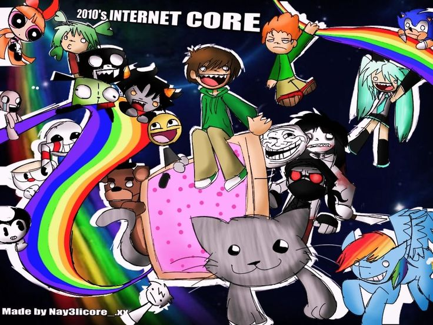
NOSTALGIA DEBUTE
An animal character that represents someone or a creative identity within the furry fandom.
Animal characters that walk on all fours and have the anatomy of real animals, yet speak, think, and act like humans (as in The Lion King or My Little Pony).
Reference image that brings together a character's appearance, colors, markings, and details.
Short for anthropomorphic: a non-human character with human-like characteristics, such as speech or posture.
A pre-made sketch by an artist featuring a specific pose or setting, where the buyer pays to have their fursona drawn in that scene.
In addition to real animals, there are "Open Species" (fictitious species created by artists that anyone can use, such as Protogens) and "Closed Species" (species for which you must purchase rights or obtain permission from the creator in order to have a character).
Ready-made characters created by artists and put up for sale (or auction) so that someone else can purchase and adopt them as their own.
A friend or companion who assists someone wearing a fursuit at events (by guiding them, since vision inside the headpiece is limited, and by carrying water).
Local, informal gatherings organized by fans from the same city or region (in parks, shopping malls, etc).
Large official conventions held at hotels or event centers (such as Brasil FurFest in Santos, SP), featuring panels, shows, parades, and an artist area.
When several people in fursuits gather for a group hug or pile up on the floor to take photos.
Terms used by adult fans of My Little Pony; “pegasister” is a feminine term used by a portion of the fandom.
An original pony version created to represent the person or their creative identity.
A mark that symbolizes a special talent or something significant about a pony.
The classic fan greeting, bumping closed fists together like hooves. Online, it is represented by the emoticon: /)*(\
Official in-universe puns used in the show to replace everybody, anybody, and nobody.
The group of six main protagonists (Twilight Sparkle, Rainbow Dash, Pinkie Pie, Rarity, Applejack, and Fluttershy). The name is a pun on Main and Mane.
Rare ponies that possess both a unicorn horn and pegasus wings, usually associated with royalty (such as Celestia, Luna, Cadance, and later Twilight).
The trio of fillies (Apple Bloom, Sweetie Belle, and Scootaloo) on a quest to earn their Cutie Marks.
Shapeshifting, insect-like pony creatures that feed on love, originally led by Queen Chrysalis.
Fan-edited videos synchronizing clips from the show with music (similar to anime AMVs).s
Transforming characters from other franchises, celebrities, or real people into ponies in the show's art style.
A genre of horror, dark suspense, or gore fanfiction and fanart involving the show's characters (such as the classics Cupcakes and Rainbow Factory).
Fandom slang for adult (NSFW) content involving MLP characters (derived from the sound of hooves hitting the ground).
An iconic catchphrase said by Rainbow Dash in Season 1 that became one of the fandom's biggest memes to compliment anything.
A term popular within a segment of the fandom for anthropomorphic characters from the Sonic universe.
Fan-made characters designed in the franchise's art style. There is a classic internet joke ("Google your name + the Hedgehog") because of how many OCs the community has created.
A term (usually used critically or ironically) for a fan character that is just an exact copy of Sonic or Shadow with different colors swapped in MS Paint or Photoshop.
Golden or glowing transformations powered by the seven Chaos Emeralds (such as Super Sonic, Super Shadow, and Hyper Sonic).
One of the most debated topics among fans—referring to the acceleration, gravity, and slope physics from the classic 2D Genesis/Mega Drive games.
The modern gameplay style (popularized in Sonic Unleashed and Sonic Colors) focused on running through 3D stages at extreme speeds using a dedicated Boost button.
The beloved virtual pet-raising minigame from Sonic Adventure 1 and 2 that fans constantly ask SEGA to bring back.
Full games built from scratch by community members (like Sonic Robo Blast 2 or Sonic Triple Trouble 16-Bit), which SEGA famously supports.
Fan-made modifications of the original classic games, featuring new levels, music, and playable characters.
An intentionally poorly drawn MS Paint version of Sonic that became one of the internet's biggest memes, famously paired with the catchphrase "Gotta go fast."
One of the most famous creepypastas (horror stories) on the internet about a haunted Sonic game with bleeding eyes, inspiring hundreds of horror fangames.
An infamous internet-created hybrid character mixing Sonic and Pikachu, known for the chaotic online history of its creator.
A reference to the 2006 reboot game, notorious in the fandom for being severely unfinished and glitchy, yet fondly remembered for introducing Silver the Hedgehog and having an iconic soundtrack.
A frequently memed or criticized name among comic fans; a former Archie Comics writer who sued SEGA over the rights to dozens of characters he created for the series (mostly echidnas related to Knuckles).
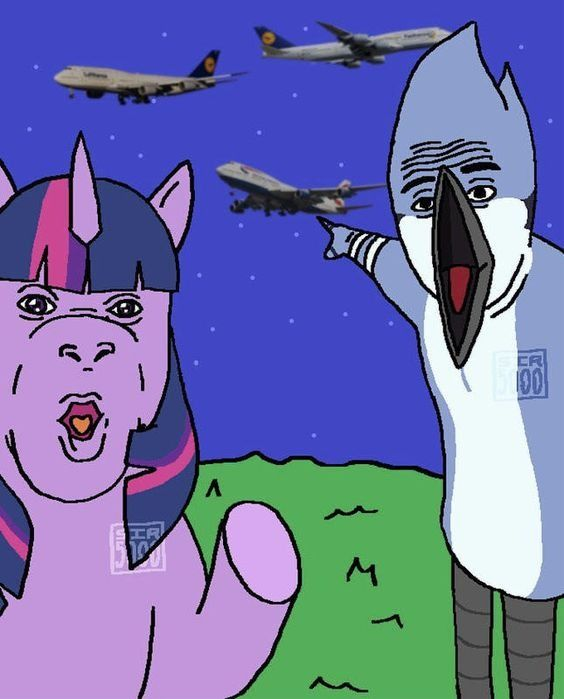
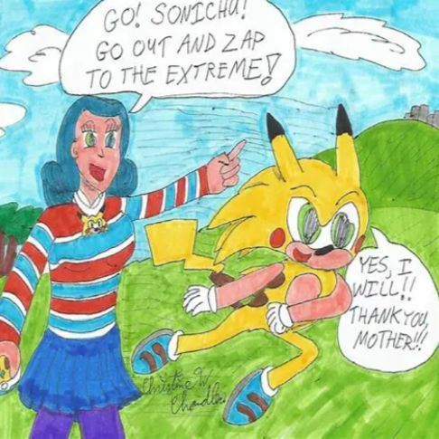
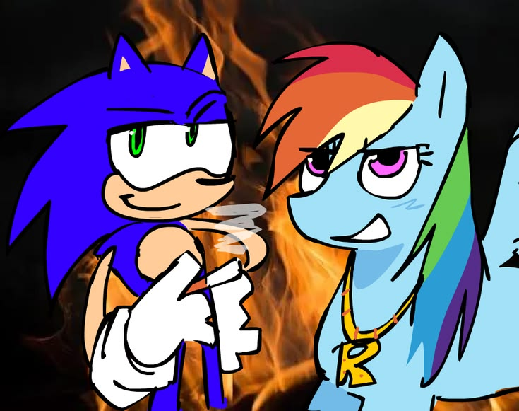
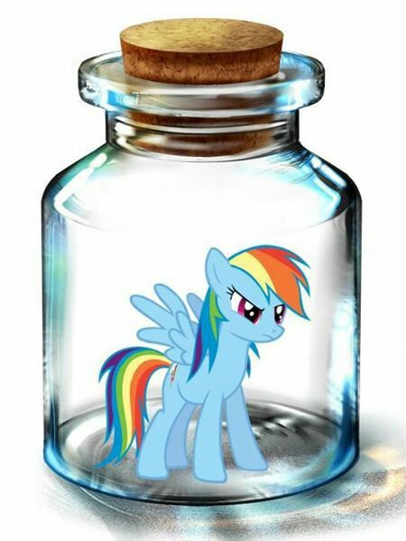
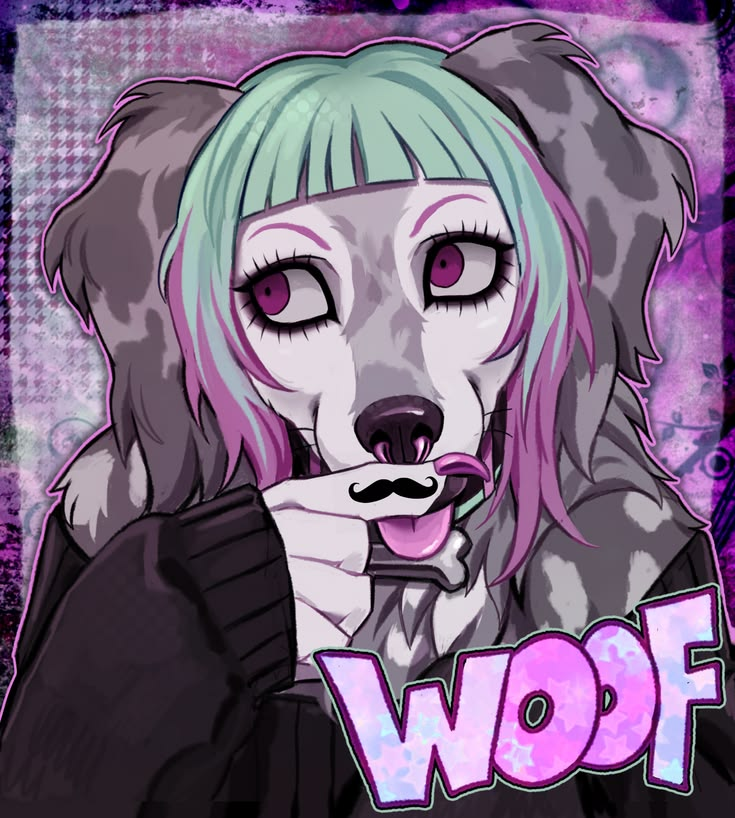
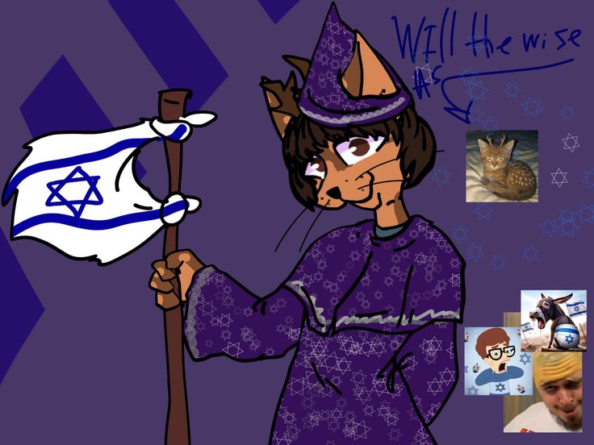
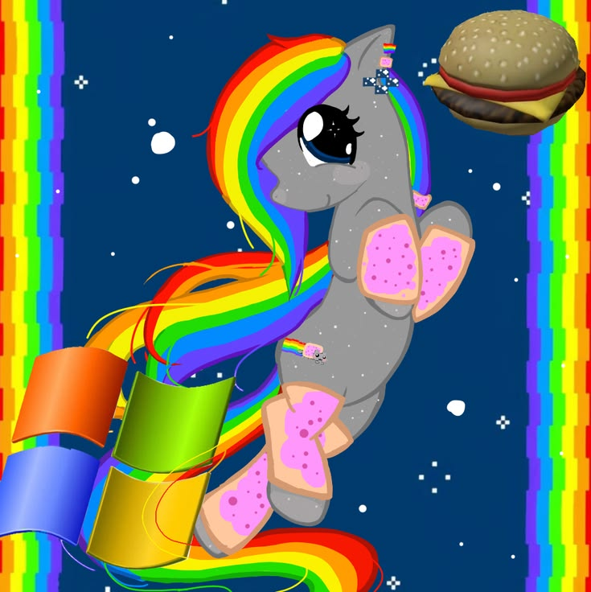
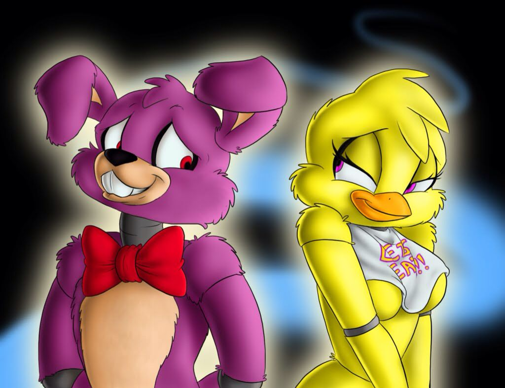
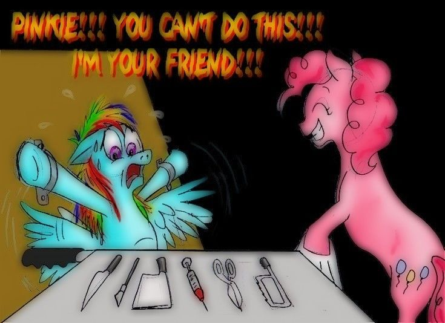
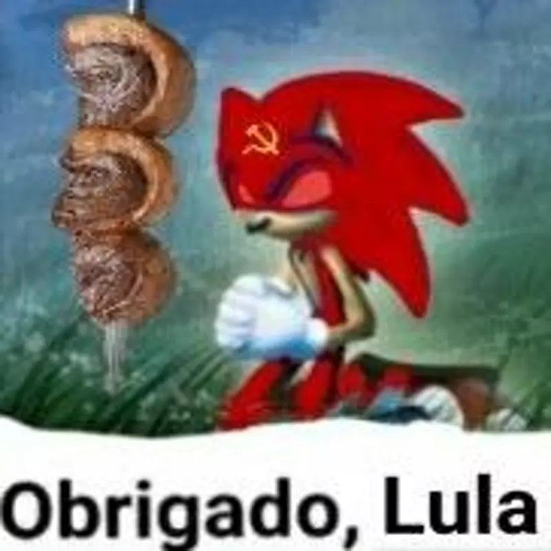
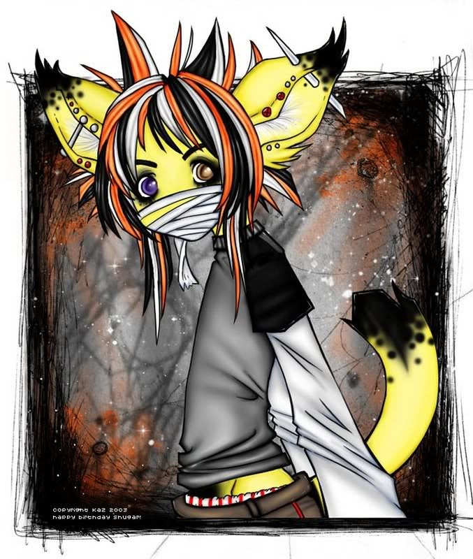
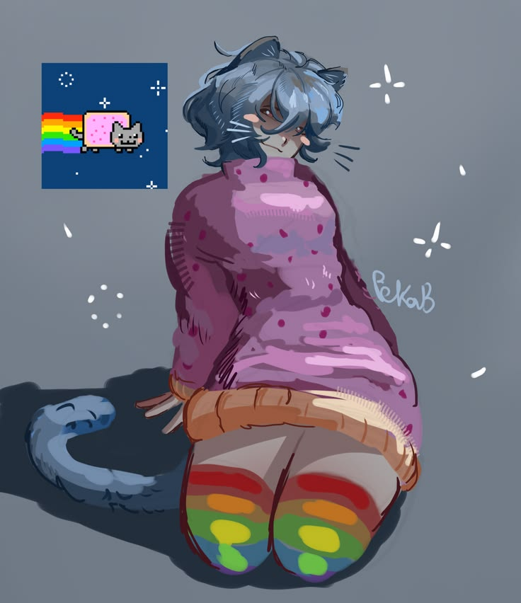